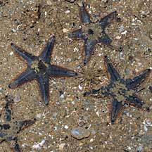
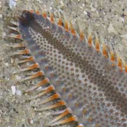
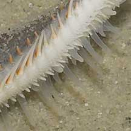
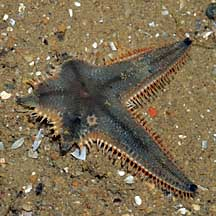
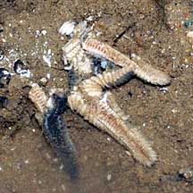
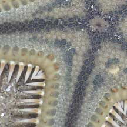
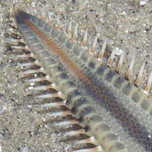
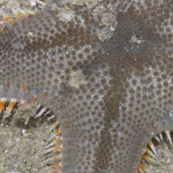
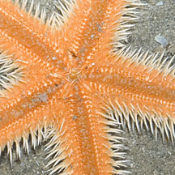
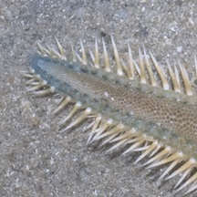

|
|
| sea stars text index | photo index |
| Phylum Echinodermata > Class Stelleroida > Subclass Asteroidea |
| Sand
sea stars Astropecten sp. Family Astropectenidae updated Mar 2020 Where seen? These fast moving sea stars are commonly encountered on our Northern shores. In sandy or silty shores. They usually remain buried in the sand during the day and emerge to forage at sunset. But they are sometimes seen foraging over the ground on a cool morning or late afternoon. Features: Diameter with arms 5-10cm. Arms long and tapered. There are particularly long stout flat spines along the sides of their arms. These spines are harmless (not toxic) and probably help them to burrow more quickly into the sand. These spines resemble the teeth of a comb and members of this family are sometimes called Comb sea stars. |
 Pasir Ris Park, Jul 08 |
 Large flat spines along the side of the arms. Changi, Apr 05 |
 Pointed tube feet. Chek Jawa, Apr 05 |
| Sand stars can move fast, often 'racing' across the sandy bottom of
a pool. Their tube feet are modified for a more powerful downward
thrust and end in points instead of suckers. These probably allow
them to get a grip on soft sediments and burrow more quickly. They
can also rapidly burrow into the sand as Mei Lin's video clip below
shows. Astropecten species are identified by the arrangement of the spines along their arms. |
 Three arms regenerating. Pasir Ris Park, Jul 08 |
 Recently dead sand star disintegrating. Pasir Ris Park, Jul 08 |
 Tiny white snails sometimes seen on the sea star. Changi, Jun 05 |
| What do they eat? These small
sea stars are carnivores! They hunt clams and snails, but also eat
any small creatures that are buried in the sand. They find buried
prey by the substances they release. These sea stars don't push their
stomachs out of their mouths. Instead, they swallow their prey whole.
It may take several days to digest their prey. They spit out any indigestible
bits such as the shells. Sometimes, many tiny white snails are found on the upperside of a sand sea star. These are parasitic snails (Family Eulimidae). |
| Some Sand sea stars on Singapore shores |
|
 |
 Arms flatter with larger marginal plates. |
|
 |
Arms not so flat with smaller marginal plates |
|
 Bright orange underside. |
 |
shared by Neo Mei Lin on her blog |
| Astropecten species recorded for Singapore from Wee Y.C. and Peter K. L. Ng. 1994. A First Look at Biodiversity in Singapore. *from Lane, David J.W. and Didier Vandenspiegel. 2003. A Guide to Sea Stars and Other Echinderms of Singapore, and Didier VandenSpiegel et al. 1998. The Asteroid fauna (Echinodermata) of Singapore with a distribuion table and illustrated identification to the species. in red are those listed among the threatened animals of Singapore from Ng, P. K. L. & Y. C. Wee, 1994. The Singapore Red Data Book: Threatened Plants and Animals of Singapore **from WORMS +from our observations |
| Astropecten
species commonly seen awaiting identification Species are difficult to positively identify without close examination. On this website, they are grouped by external features for convenience of display. |
| Orange sand star |
| Family Astropectinidae |
| Astropecten koehleri=**Astropecten indicus *Astropecten bengalensis *Astropecten indicus (Plain sand star) *Astropecten novaeguineae +Astropecten vappa (Painted sand star) |
Links
|